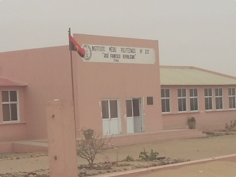

José Francisco Republicano, nascido a 5 de Outubro de 1910, em Porto Alexandre, atualmente Tômbwa, Filho de José Inácio e de Delfina Helena, Pescador de Profissão. Até a sua morte em Junho de 2000, foi um ancião digno de referência e respeito pela sua trajetória de vida...
Ver Galeria

Veja tudo de perto explorando a nossa galeria
Ver galeriaNossos Cursos
Nossos cursos técnicos oferecem conhecimentos práticos e equipe capacitada para impulsionar sua carreira. Descubra o curso certo para você e invista em seu futuro!
Curso Técnico de Informática Coordenador: Pedro Chaquita Chiteculo
Curso Técnico de Energia e Intalações Eléctricas Coordenador: Pedro Mulangui
Curso Técnico de Mecânica Coordenador: Carlos Santana
Curso Técnico de Energias Renováveis Coordenador: António Kapa
Quem foi José F. Republicano?
Entre em Contato
Entre em contato conosco para saber mais sobre as possibilidades de formação e carreira em nossa instituição.